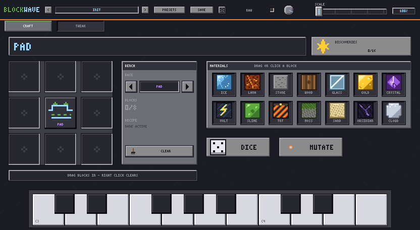
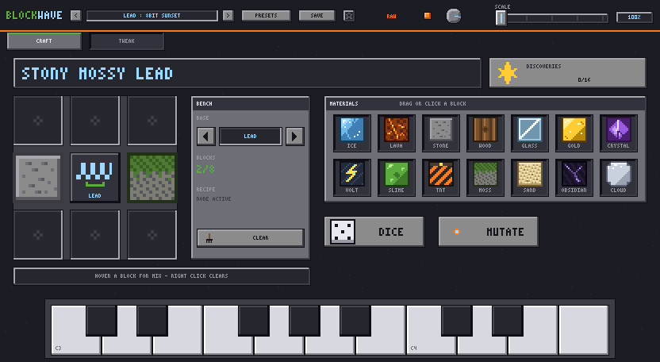
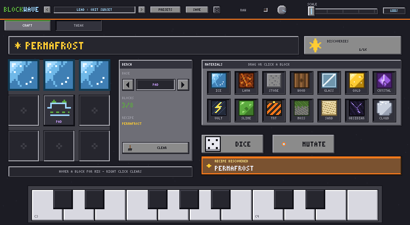
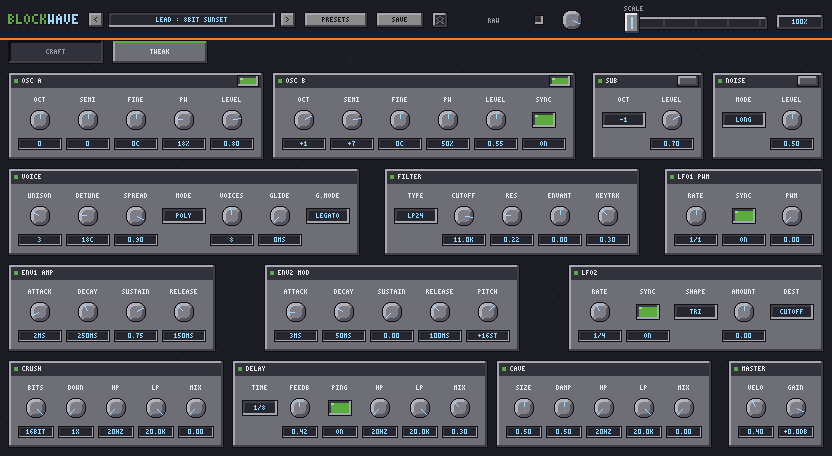

Every sound is a square.
BLOCKWAVE is a synthesizer with one waveform and no knob you have to find first. You build a sound on a 3×3 bench: a BASE block in the middle, MATERIAL blocks around it — ICE, LAVA, OBSIDIAN, thirteen others.
Same blocks, same sound, on every machine. There is a full 67-parameter synth underneath if you want it, but you never have to open it.
Free · Open source · No account · No upsell

Download
BLOCKWAVE 1.0.0
macOS 10.15+ (Intel and Apple Silicon) · Windows 10/11 64-bit. Nothing to sign up for.
Or browse the release page.
Read this first: the builds are not code-signed
Signing costs money every year, and this is free. So your operating system will complain once, and then never again. This is the number one reason a free plug-in appears to be broken.
macOS — plug-ins
After copying BLOCKWAVE.vst3 to
~/Library/Audio/Plug-Ins/VST3 and
BLOCKWAVE.component to
~/Library/Audio/Plug-Ins/Components, clear the quarantine flag,
or your DAW will silently refuse to load them:
xattr -dr com.apple.quarantine ~/Library/Audio/Plug-Ins/VST3/BLOCKWAVE.vst3
xattr -dr com.apple.quarantine ~/Library/Audio/Plug-Ins/Components/BLOCKWAVE.componentThen rescan plug-ins in your host.
macOS — standalone app
Right-click BLOCKWAVE.app and choose Open the first
time. Double-clicking it will only offer to move it to the Trash.
On macOS 15 and newer, right-click → Open may not be enough. Try to open it once, then go to System Settings → Privacy & Security, scroll to the bottom, and press Open Anyway next to the BLOCKWAVE message.
Windows
Right-click the downloaded zip, choose Properties, tick
Unblock at the bottom, then extract it. Copy the whole
BLOCKWAVE.vst3 folder into
C:\Program Files\Common Files\VST3 and rescan in your host.
If SmartScreen still interrupts, choose More info → Run anyway. If your antivirus quarantines it, add an exclusion for that folder.
If it still does not show up
Check that the host is scanning the folder you copied into, and that you copied the
whole .vst3 bundle rather than a file from inside it. Every zip also
contains a plain-text INSTALL.txt with these same steps, offline.
The bench
You craft the sound, you don't dial it in
The centre cell holds one of eight BASE archetypes — LEAD, BASS, PAD, PLUCK, KEYS, CHIP, PERC, DRONE. The eight cells around it hold materials, dragged in from the palette or clicked in. Each material applies a fixed set of parameter changes; stacking the same one intensifies it with diminishing returns. Every block also has its own MIX knob, hidden until you hover the block, for when a material is simply too much.
For ordinary crafting, position does not matter — only which blocks are on the bench. DICE fills the bench at random; MUTATE nudges the result somewhere the grid alone cannot reach. And the whole thing is deterministic: the same blocks give the same sound on every machine, which is what makes the next part work.

Sixteen exact patterns are recipes
For recipes — and only for recipes — position matters. Land one of sixteen exact block patterns and the plugin stops you with a jingle, a banner, and a hand-tuned sound that is better than what the grid would have given you. A counter on the CRAFT tab tracks how many of the sixteen you have found. Here are three of them, in full, so you can reproduce them right now.
Permafrost
Pad
Magma Floor
Bass
Quarry Kick
Perc
Thirteen more recipes exist. They are not published anywhere, they are not in the manual, and the plugin gives no hints beyond the counter. Find them, or trade them.

Under the hood
What is actually in it
- OscillatorsTwo pulse oscillators with independent pulse width and hard sync, a square sub, and NES-style LFSR noise. polyBLEP anti-aliasing, plus a global RAW switch that turns it off when you want 8-bit dirt.
- FilterTPT state-variable filter: LP24, LP12, BP, HP, with envelope amount and key tracking.
- ModulationTwo ADSR envelopes with a pitch-envelope amount, two tempo-syncable LFOs.
- VoicingUnison up to 8 with detune and stereo spread. Poly, mono and legato modes with glide.
- EffectsBit-crusher, ping-pong delay, and a dark CAVE reverb — each with its own high-pass and low-pass.
- Automation67 host-automatable parameters. Nothing is hidden from the host.
- Presets128 factory presets across LEAD, BASS, PLUCK, PAD, KEYS, CHIP, PERC and FX. Every one of them is built from a bench you can open and inspect, so the browser teaches you the system instead of hiding it.
- InterfaceOriginal pixel art, drawn procedurally with zero image files and an original 3×5 bitmap font. A 100–200% scale slider that stays crisp instead of blurry, and remembers where you left it.
- FormatsmacOS: VST3, Audio Unit and Standalone, 10.15 or newer, Intel and Apple Silicon. Windows: VST3, 10/11 64-bit. 44.1–192 kHz, any buffer size, offline rendering included.
- LicenceGPLv3. The whole source tree is on GitHub, including the DSP.
For the people who care about this sort of thing: 4947 automated tests;
pluginval at strictness level 10 passes on macOS VST3 and AU and on the Windows
VST3 built in CI; no known crashes; and about 3.5% of one core for 16 voices at 8-way unison
with every effect on, at 44.1 kHz and a 128-sample buffer.

BLOCKWAVE was written by Claude Code agents — a DSP engineer, a UI engineer, a preset designer and a QA runner — driven by one human producer, over roughly a week, from a written specification. A separate agent doing adversarial code review found real defects that the normal QA pass had missed. Whether that is interesting or alarming probably depends on who you ask; the test suite and the source are both public either way.
Stay posted
New recipes and updates
There is no mailing list, and nothing here is gated — the download above is the whole plugin. If you want to hear when recipes or updates land, GitHub will tell you:
- Open the repository, press Watch at the top right, choose Custom, and tick Releases. You get an email or a notification when there is a new version, and nothing else.
- Or, if you live in a feed reader, subscribe to the
releases feed
(
releases.atom).
No account is needed to download. The Watch button needs a GitHub account, which is why it is a suggestion and not a wall.